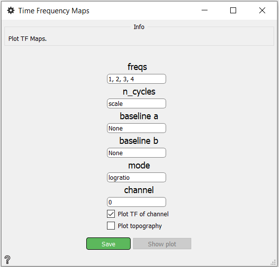
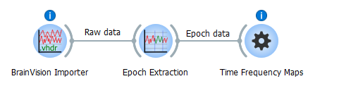
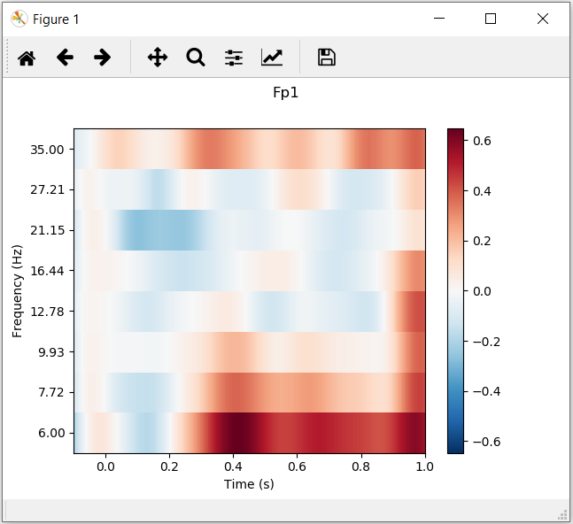
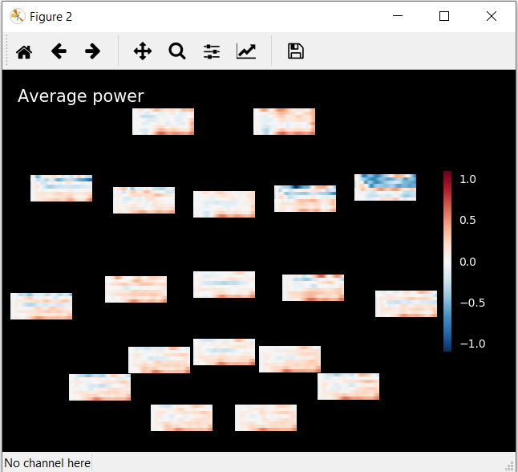

Time Frequency Maps
Plot time-frequency maps.
Inputs
Output Time-Frequency Map
Use

- freq - The frequencies in Hz.
- n_cycles - The number of cycles globally or for each frequency. If n_cycles is ‘scale’ n_cycle = freqs / 2.
- baseline a - Start of the time interval to apply baseline correction.
- baseline b - End of the time interval to apply baseline correction.
- mode - MOde to perform baseline correction.
Possibilities:
- mean - subtracting the mean of baseline values
- ratio - dividing by the mean of baseline values
- logratio - dividing by the mean of baseline values and taking the log
- percent - subtracting the mean of baseline values followed by dividing by the mean of baseline values
- zscore - subtracting the mean of baseline values and dividing by the standard deviation of baseline values
- zlogratio - dividing by the mean of baseline values, taking the log, and dividing by the standard deviation of log baseline values
- channel - Channel which TF should be ploted
- Plot TF of channel - If this check box is checked, the Time-Frequency of channel will be displayed after pressing Show plot.
- Plot topography - If this check box is checked, the topography will be displayed after pressing Show plot.
- Save button - Saves changes
- Show plot button - Button for showing plots.
Example



Where Figure 1 is TF of channel and Figure 2 is topography.
More information about plot TF of channel and plot topography. Information about container for Time-Frequency data here.